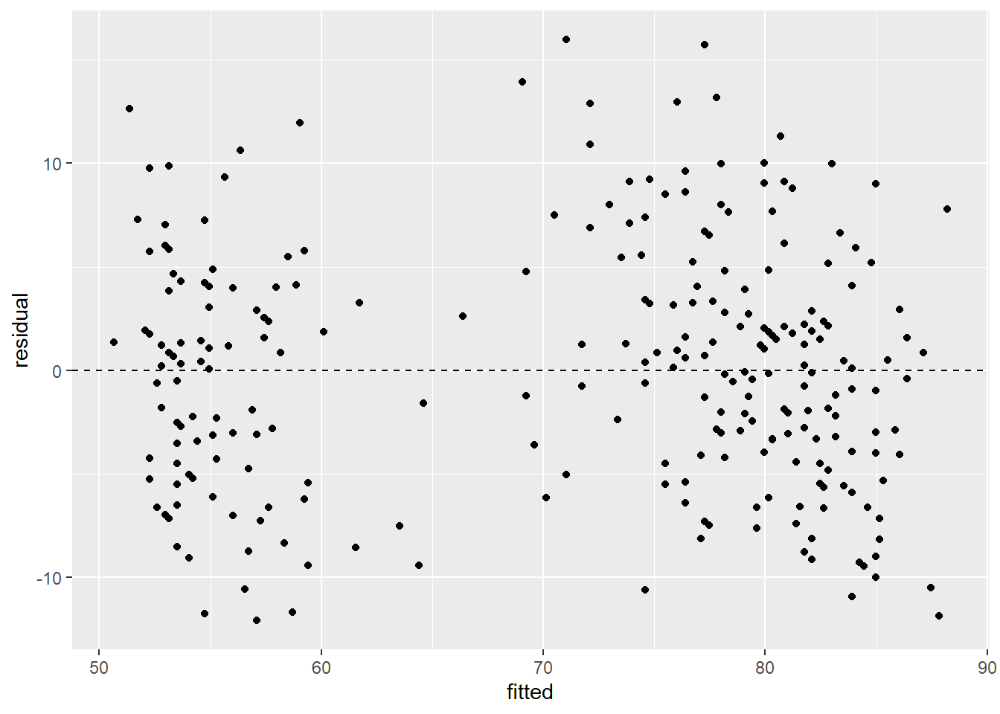
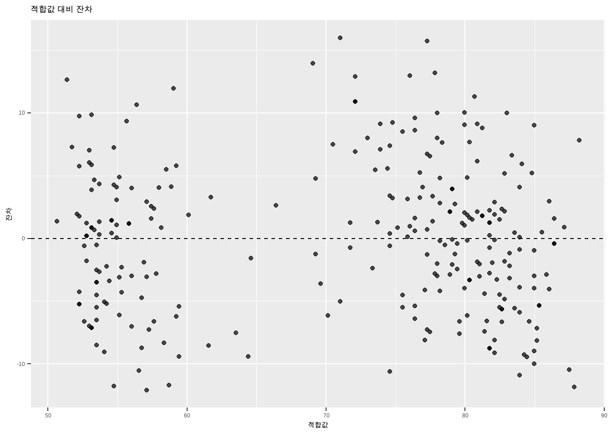

lm(waiting ~ eruptions, data = faithful)
Call:
lm(formula = waiting ~ eruptions, data = faithful)
Coefficients:
(Intercept) eruptions
33.47 10.73 상관관계(correlation)에 대한 추론을 수행하면서, 우리는 두 양적 변수 사이의 선형 관계를 ’방향’과 ’강도’라는 측면에서 이해하기 시작했습니다. 하지만 상관관계 추론만으로는 한 변수가 다른 변수에 구체적으로 어떻게, 그리고 얼마만큼 영향을 미치는지 온전히 파악할 수 없습니다.
예를 들어, 변수 \(x\)가 1단위 증가할 때마다 반응 변수 y가 꾸준히 증가하는 양의 선형 관계가 있다고 가정해 보십시오. 최근 클라우드 컴퓨팅 환경에서 동시 접속자 수(\(x\))가 1만 명 증가할 때마다 AI 서버의 과부하 지수(\(y\))가 약 0.4만큼 상승하는 데이터 센터가 있는가 하면, 접속자가 1만 명 늘어날 때마다 과부하 지수가 1.8이나 급격히 치솟는 데이터 센터도 존재할 수 있습니다.
두 시스템 모두 동시 접속자 수와 서버 과부하 지수 간의 상관관계(상관계수 \(r\)로 요약되는 강도)는 동일하게 매우 높게 나타날 수 있지만, 실제 시스템에 가해지는 충격(기울기)은 완전히 다릅니다. 이처럼 상관계수라는 단일한 지표 너머의 구체적인 관계의 형태, 즉 “예측 변수가 한 단위 변할 때 반응 변수가 얼마나 변하는가”를 구분하고 변수 간의 관계를 실질적으로 예측하기 위해서는 새로운 통계적 접근법이 필요합니다.
이 기법은 선형 관계를 맺고 있는 두 양적 변수, 즉 하나의 예측 변수(predictor)와 하나의 반응 변수(response)를 취하여 그 관계를 잘 설명하는 단일한 ’직선’을 모델링합니다. 이 직선은 상관관계가 주는 단편적인 정보보다 훨씬 풍부한 인사이트를 제공합니다. 단순 선형 회귀를 통해 반응 변수의 미래 값을 정밀하게 예측할 수 있음은 물론, 이 직선이 내포한 다양한 통계적 특성을 분석하여 폭넓은 비즈니스 및 연구 질문에 답할 수 있습니다.
단순 선형 회귀를 위한 복잡한 수학적 추정치들을 수작업으로 일일이 유도할 수도 있지만, 대규모 데이터를 다루는 현대 데이터 과학 환경에서는 이를 손으로 직접 계산하는 것이 비실용적입니다. 따라서 이 장에서는 추정치가 어떻게 도출되는지 그 핵심 원리만 일반적인 용어로 다루고, R 소프트웨어의 컴퓨팅 파워를 활용하는 실무적 방법에 집중하겠습니다. 분석의 예시로 다음 데이터셋을 살펴보겠습니다.
올드 페이스풀(Old Faithful) 간헐천은 과거 분출 시간의 길이가 길어지면 다음 분출까지의 대기 시간도 길어진다는 흥미로운 자연 법칙을 따르는 것으로 알려져 있습니다. 우리는 대기 시간을 예측하는 단순 선형 회귀 모델을 구축하기 위해, R의 faithful 데이터셋을 활용하여 이 현상을 통계적으로 파헤쳐 보겠습니다.
수학에서 다루는 직선의 기울기-절편(Slope-intercept) 형태는 다음과 같이 정의됩니다.
\[ y=\beta_0+\beta_1 x \]
여기서 \(y\)는 종속 변수(또는 우리가 예측하려는 목표 변수)이며, \(x\)는 독립 변수(예측에 사용하려는 입력 변수)입니다. 이 직선 방정식은 두 가지 핵심 요소로 구성됩니다. 바로 기울기(Slope) \(\beta_1\)과 절편(Intercept) \(\beta_0\)입니다. 기울기는 독립 변수 \(x\)가 ‘정확히 한 단위’ 증가할 때 종속 변수 \(y\)가 수치적으로 얼마나 변하는지를 설명합니다. 기울기가 양수이면 독립 변수와 종속 변수 사이에 양의 관계가 형성되며, 기울기가 음수이면 두 변수는 서로 반대 방향으로 움직이는 음의 관계를 맺습니다. 만약 기울기가 정확히 0이라면, 이는 독립 변수가 종속 변수의 변화에 아무런 영향력을 행사하지 못함을 의미합니다.
절편 \(\beta_0\)는 독립 변수 x의 값이 0일 때 종속 변수 y가 취하게 될 기대값을 알려줍니다. 방정식에 \(x=0\)을 대입해 보면 그 수학적 의미가 명확해집니다.
\[ y=\beta_0+\beta_1 \times 0 = \beta_0 \]
기하학적인 직선의 기본 개념들은 단순 선형 회귀의 통계적 영역으로 자연스럽게 확장됩니다. 단순 선형 회귀에서 우리는 “반응 변수 y가 예측 변수 x와 선형적인 관계를 맺고 있다”고 강력하게 가정합니다. 수집된 관측치 데이터에 이를 직선 형태로 적용하면 다음과 같은 식이 도출됩니다.
\[ y_i=\beta_0+\beta_1 x_i \]
이전과 마찬가지로 절편 \(\beta_0\)는 예측 변수 \(x_i\)가 0일 때 기대되는 반응 변수의 평균적인 값입니다. (물론 현실 데이터에서는 \(x=0\)이라는 상황 자체가 논리적으로 불가능하거나 무의미할 수도 있지만, 수학적 기준점으로서의 역할은 유지됩니다.) 기울기 \(\beta_1\)은 예측 변수가 한 단위 증가할 때 반응 변수가 수치상 평균적으로 얼마나 변할 것인지 그 ’기대 변화량’을 나타냅니다.
그런데 위 수식에 나타난 예측 변수와 반응 변수의 관계는, 수집된 모든 데이터 \(y_i\)가 수학적인 직선 위에 완벽하게 일렬로 늘어서 있다는 비현실적인 가정을 내포합니다. 만약 이것이 사실이라면 우리는 반응 변수를 오차 없이 완벽하게 예측할 수 있어야 합니다. 올드 페이스풀 간헐천 데이터를 산점도로 그려보면 관측치들이 직선 주변에 흩어져 있을 뿐 완벽히 직선 위에 놓여 있지 않음을 눈으로 확인할 수 있습니다. 현실 세계의 데이터 모델링에서도 이처럼 완벽한 예측은 불가능합니다. 이 엄연한 사실 때문에 우리는 반응 변수의 예측 과정에 필연적으로 ’오차(Error)’가 수반됨을 겸허히 인정해야 합니다. 직선이 데이터의 큰 흐름을 훌륭하게 잡아낼 수는 있지만, 언제나 모델이 설명할 수 없는 무작위적인 오차(노이즈)가 남기 마련입니다. 이러한 현실을 수식에 반영하기 위해 회귀 방정식 끝에 오차 항을 추가합니다.
\[ y_i=\beta_0+\beta_1 x_i + \epsilon_i \]
이것이 현대 통계학에서 널리 쓰이는 표준 단순 선형 회귀 모델입니다. 이 정교해진 모델에서 \(\epsilon_i\)는 \(i\)번째 관측치에 깃든 설명되지 않는 무작위 오차를 의미합니다. 이 오차 항은 확률 변수(random variable)이므로 특정한 형태의 확률 분포를 따릅니다. 종종 이 오차가 완벽한 정규분포(normal distribution)를 따른다고 가정하기도 하지만, 이 대목에서는 무조건적인 정규성을 강요하지 않겠습니다. 다만, 회귀 분석이 성립하려면 오차 \(\epsilon_i\)에 대해 다음 세 가지 핵심적인 가정을 반드시 세워야 합니다.
이 가정들 중 단 하나라도 어긋나면 우리가 애써 추정한 회귀선이 크게 흔들릴 수 있습니다. 오차들이 독립적이지 않고 서로 상관되어 있다면(주가 시계열 데이터), 회귀 추론 결과에 심각한 편향이 발생합니다. 오차의 기댓값이 0이 아니라면, 이 치우침을 보정하기 위해 절편 추정치가 엉뚱하게 왜곡될 것입니다. 마지막으로 오차의 분산이 데이터 구간에 따라 출렁인다면(이분산성) 회귀 모델의 \(p\)-값이나 신뢰 구간이 완전히 부정확해집니다. 이러한 가정들은 회귀 모델이 신뢰할 만한 예측 기계로 작동하는 데 필수불가결하므로, 이번 장의 뒷부분에서 이를 엄격하게 진단하는 방법을 상세히 다루겠습니다.
회귀 모델 내부에는 통계학자가 추정해야 할 세 가지 미지의 모수(parameter)가 숨어 있습니다. 바로 절편 \(\beta_0\), 기울기 \(\beta_1\), 그리고 오차의 분산 \(\sigma^2\)입니다. 이들은 모집단에 고정된 참값이지만 우리가 영원히 알 수 없는 값이므로 표본 데이터를 통해 추정해야만 합니다. 기울기와 절편을 결정하면 곧바로 추정 회귀선이 도출되므로, 이 두 가지부터 공략해 보겠습니다.
회귀선을 추정할 때 우리의 지상 과제는 ‘산점도의 모든 점들이 우리가 긋는 직선에 전체적으로 최대한 가깝게 달라붙도록’ 만드는 것입니다. 즉, 실제 관측치 점들과 추정 직선 사이의 수직 거리(오차)를 총합의 관점에서 최소화하고 싶어 합니다. 음수와 양수 오차가 서로 상쇄되는 것을 막기 위해 이 거리를 제곱하여 합산하며, 이를 오차 제곱합(sum of squared errors, SSE)이라고 부릅니다. SSE를 구하려면 먼저 개별 관측치의 오차를 정의해야 합니다. 회귀 모델 식을 오차 \(\epsilon_i\)를 기준으로 재정리하면 다음과 같습니다.
\[ \epsilon_i=y_i-\beta_0-\beta_1 x_i \]
오차의 정의를 확보했으므로 이제 이를 기반으로 SSE를 도출합니다. 각 오차를 제곱한 뒤 \(i=1\)부터 \(n\)까지 모두 합산하면 됩니다.
\[ \text{SSE}=\sum_{i=1}^n \epsilon_i^2 = \sum_{i=1}^n (y_i - \beta_0 - \beta_1 x_i)^2 \]
이제 우리의 목표는 이 거대한 SSE 함수를 수학적으로 최소화하는 최적의 \(\beta_0\)와 \(\beta_1\) 값을 찾아내는 것입니다. 이 과정의 복잡한 미적분학적 유도 과정을 지면에 전부 나열하지는 않겠지만, 편미분을 통해 오차 함수의 최솟값을 찾는 과정이 숨어 있음을 미적분학에 익숙한 독자라면 쉽게 짐작할 수 있을 것입니다. 이 과정을 거쳐 마침내 도출된 기울기와 절편의 통계적 추정치(각각 \(\hat{\beta}_1\)과 \(\hat{\beta}_0\))는 다음과 같이 놀랍도록 깔끔한 형태를 띱니다.
\[ \begin{aligned} \hat{\beta}_1 &= r_{x,y} \frac{s_y}{s_x} \\ \hat{\beta}_0 &= \bar{y} - \hat{\beta}_1 \bar{x} \end{aligned} \]
여기서 \(r_{x,y}\)는 예측 변수와 반응 변수 사이의 피어슨 상관계수이고, \(s_x\)와 \(s_y\)는 각각 두 변수의 표본 표준편차(sample standard deviation)입니다. \(\bar{x}\)와 \(\bar{y}\)는 각 변수의 표본 평균(sample mean)을 의미합니다. 기울기 \(\hat{\beta}_1\)을 도출하는 첫 번째 공식에서 상관관계와 회귀분석 사이의 깊은 혈연관계를 엿볼 수 있습니다. 상관계수 \(r\)이 양수이면 기울기 역시 양수 방향을 향하며, 음수이면 기울기도 음수로 꺾입니다. 또한 두 변수 간의 상관관계가 강해질수록 회귀선의 기울기도 가팔라지는 경향을 보입니다. 반대로 상관관계가 0에 한없이 가까워지면(두 변수 간 선형적 연관성이 희박함을 의미), 기울기 추정치 또한 0에 수렴하여 예측 변수 \(x\)가 반응 변수 \(y\)에 미치는 영향력이 통계적으로 무의미해짐을 나타냅니다.
이 공식을 올드 페이스풀 데이터셋에 직접 적용해 봅시다. 분출 시간(예측 변수)과 대기 시간(반응 변수) 사이의 상관관계는 \(r_{x,y}=0.9008\)에 달합니다. R로 분석한 결과, 예측 변수의 표준편차는 \(s_x=1.1414\), 반응 변수의 표준편차는 \(s_y=13.5950\)으로 확인되었습니다. 공식에 대입하면 회귀선의 기울기 추정치는 \(\hat{\beta}_1 = 0.9008 \times (13.595 / 1.1414) \approx 10.7296\)으로 계산됩니다(반올림 전 원값으로 계산한 결과이며, 표시된 반올림 값을 그대로 넣으면 마지막 자리가 조금 달라집니다). 이 수치는 간헐천의 분출 시간이 1분 길어질 때마다 다음 분출까지 방문객들이 약 10.73분을 추가로 대기해야 함을 의미합니다.
다음으로 절편 추정치 \(\hat{\beta}_0\)를 계산할 차례입니다. 방금 구한 기울기 추정치 \(\hat{\beta}_1=10.7296\)과 함께 두 변수의 표본 평균인 \(\bar{x}=3.4878\), \(\bar{y}=70.8971\)을 이용합니다. 절편 공식에 대입하면 \(\hat{\beta}_0=70.8971 - (10.7296 \times 3.4878) = 33.4744\)가 도출됩니다. 이로써 우리의 추정 회귀선 모델이 마침내 완성되었습니다.
\[ \hat{y}_i = 33.4744 + 10.7296x_i \]
회귀 모델에 대해 우리가 추정해야 할 마지막 모수는 바로 오차의 분산 \(\sigma^2\)입니다. 만약 각 관측치에 숨겨진 실제 오차 값들을 우리가 모두 알고 있다면, 그 값들의 표본 분산을 구하여 참 분산 \(\sigma^2\)를 손쉽게 추정할 수 있을 것입니다. 그러나 현실적인 딜레마는 우리가 참 오차 \(\epsilon_i\)를 결코 알 수 없다는 데 있습니다. 오차의 정의가 \(\epsilon_i=y_i-\beta_0-\beta_1x_i\)이므로, 오차를 알려면 모집단의 참 절편 \(\beta_0\)와 참 기울기 \(\beta_1\)을 알아야 하는데 이는 신만이 아는 값이기 때문입니다.
하지만 다행히 대안인 추정치 \(\hat{\beta}_0\)와 \(\hat{\beta}_1\)이 있습니다. 참 모수 대신 이 추정 계수들을 공식에 대입하여 실제 오차에 최대한 근접한 ’근사치’를 계산해 냅니다. 이렇게 계산된 오차의 대용품을 잔차(residual)라고 부르며, 기호로는 \(e_i\)를 사용합니다.
\[ e_i=y_i-\hat{\beta}_0-\hat{\beta}_1x_i \]
이제 이 잔차들을 모아 참 오차 분산 \(\sigma^2\)를 정밀하게 추정합니다. 이 분산 추정치를 통계학에서는 평균 제곱 오차(mean squared error, MSE)라고 부르며, \(\hat{\sigma}^2\)로 표기하고 다음 수식을 통해 계산합니다.
\[ \hat{\sigma}^2 = \frac{1}{n-2}\sum_{i=1}^n e_i^2 \]
이 복잡한 덧셈과 나눗셈을 수백, 수천 개의 데이터에 대해 수작업으로 계산하는 것은 무모한 일입니다. 따라서 우리는 R 소프트웨어의 도움을 받아 이 모든 계산을 순식간에 처리할 것입니다.
분석가가 직접 표본 상관관계, 표준편차, 평균을 일일이 계산한 뒤 위 공식들에 대입하여 기울기와 절편을 도출할 수도 있지만, R은 이를 위한 간편한 내장 함수를 제공합니다.
R의 lm (Linear Model) 함수는 단순 선형 회귀뿐만 아니라 다중 선형 회귀 모델까지 완벽하게 추정해 내는 핵심 도구입니다. 이 함수에 반응 변수와 예측 변수의 관계식을 틸드(~)로 묶어 전달하고 데이터셋을 지정하기만 하면, R 엔진이 기울기, 절편, MSE를 포함한 방대한 통계량을 찰나의 순간에 연산하여 출력합니다. lm 함수의 기본 문법은 다음과 같습니다.
lm(response ~ predictor, data = dataset)이 문법을 우리의 올드 페이스풀 예시에 대입해 보겠습니다. 데이터셋 이름은 faithful이고, 반응 변수는 대기 시간을 뜻하는 waiting, 예측 변수는 분출 시간을 뜻하는 eruptions입니다. R 코드는 다음과 같이 작성됩니다.
lm(waiting ~ eruptions, data = faithful)
Call:
lm(formula = waiting ~ eruptions, data = faithful)
Coefficients:
(Intercept) eruptions
33.47 10.73 코드를 실행하면 R은 터미널에 아래와 같은 간결한 결과를 즉각 반환합니다. (Intercept) 열 아래의 숫자는 우리가 앞서 손으로 구했던 절편 추정치 \(\hat{\beta}_0\)를 나타내고, eruptions 열 아래의 숫자는 기울기 추정치 \(\hat{\beta}_1\)을 의미합니다. 이 열의 명칭은 사용자가 lm 함수에 입력한 예측 변수의 이름에 따라 동적으로 바뀝니다.
실무에서는 단순히 회귀 계수를 화면에 출력하는 것에 그치지 않고, 후속 분석(잔차 진단, 예측 등)을 위해 lm 함수의 반환값을 메모리에 객체(Object) 형태로 저장하는 것이 필수적입니다. 이는 R에서 변수나 데이터 프레임을 할당 연산자 <-를 사용해 저장하는 방식과 완벽히 동일합니다.
model_name <- lm(...)우리의 올드 페이스풀 단순 선형 회귀 모델을 slr (Simple Linear Regression)이라는 직관적인 이름의 객체로 저장해 보겠습니다.
slr <- lm(waiting ~ eruptions, data = faithful)이렇게 저장된 lm 객체에서 우리가 자주 끄집어내야 하는 정보 중 하나가 바로 오차 분산의 추정치인 MSE입니다. MSE를 비롯한 심층 통계량은 lm 객체의 요약 정보(Summary) 깊숙한 곳에 보관되어 있으며, R의 summary 함수를 호출하여 열람할 수 있습니다. 과거 탐색적 데이터 분석 장에서 변수의 다섯 수치 요약(Five-number summary)을 볼 때 사용했던 바로 그 함수입니다. 입력값이 lm 객체일 경우, summary 함수는 회귀 분석에 특화된 방대한 분석 리포트를 생성해 냅니다.
summary(model_object)이 요약 리포트는 회귀 모델의 통계적 유효성을 평가하려는 분석가의 모든 갈증을 해소해 줍니다. slr 객체에 저장된 올드 페이스풀 회귀의 심층 요약 정보를 확인하고 싶다면 아래 코드를 실행하십시오.
summary(slr)
Call:
lm(formula = waiting ~ eruptions, data = faithful)
Residuals:
Min 1Q Median 3Q Max
-12.0796 -4.4831 0.2122 3.9246 15.9719
Coefficients:
Estimate Std. Error t value Pr(>|t|)
(Intercept) 33.4744 1.1549 28.98 <2e-16 ***
eruptions 10.7296 0.3148 34.09 <2e-16 ***
---
Signif. codes: 0 '***' 0.001 '**' 0.01 '*' 0.05 '.' 0.1 ' ' 1
Residual standard error: 5.914 on 270 degrees of freedom
Multiple R-squared: 0.8115, Adjusted R-squared: 0.8108
F-statistic: 1162 on 1 and 270 DF, p-value: < 2.2e-16실행 결과, R은 다음과 같은 상세한 통계 요약표를 반환합니다. 우리가 그토록 찾던 MSE, 혹은 MSE의 파생 통계량은 요약표 하단의 Residual standard error 항목에 명시되어 있습니다. 잔차 표준 오차(Residual standard error)는 MSE에 제곱근을 취한 값으로, 앞서 수식으로 다루었던 오차의 표준편차 추정치 \(\hat{\sigma}\)와 완전히 동일한 개념입니다. 올드 페이스풀 회귀 모델의 잔차 표준 오차는 5.914로 나타났으며, 이를 역으로 제곱하면 원래 찾고자 했던 MSE 및 오차 분산 추정치 \(\hat{\sigma}^2 = 5.914^2 = 34.9755\)를 얻을 수 있습니다.
R의 기본 데이터 패키지에 내장된 cars 데이터셋을 작업 공간으로 로드해 주십시오. 차량의 주행 속도(speed)를 예측 변수로 삼아 제동 시 정지 거리(dist)를 추정하는 최적의 단순 선형 회귀 모델 식을 도출해 보십시오.
Ecdat 패키지에서 제공하는 Icecream 데이터셋을 R 환경으로 불러오십시오. 월평균 기온(temp) 데이터 하나만을 사용하여 월별 아이스크림 소비량(cons)을 예측하는 선형 회귀 모델을 구축하십시오. 해당 모델에서 도출된 오차 분산(MSE)의 추정치는 구체적으로 얼마입니까?
DAAG 라이브러리에 포함된 humanpower1 데이터셋을 준비해 주십시오. 이 데이터는 인간의 산소 섭취량 수준이 실제 낼 수 있는 전력 출력(킬로그램당 와트 단위)과 어떤 물리적 선형 관계를 맺는지 정량적으로 분석한 자료입니다. 체내 산소 섭취량(o2)을 예측 변수로 투입하여 킬로그램당 와트 전력 출력(wattsPerKg)을 예측하는 최적의 회귀 계수(기울기와 절편)를 산출해 보십시오. 이때 산출된 모델의 오차 분산 추정치 \(\hat{\sigma}^2\)는 얼마입니까?
회귀 모델을 그토록 치열하게 적합시키는 궁극적인 비즈니스 목적 중 하나는 바로 ’미래에 대한 예측’을 생성하는 것입니다. 우리는 주행 속도를 바탕으로 사고 위험성을 낮추기 위한 예상 정지 거리를 계산하고 싶고, 간헐천의 이전 분출 시간을 측정하여 관광객에게 다음 분출까지의 대기 시간을 정확히 안내하고 싶어 합니다. 따라서 통계학적으로 완결된 회귀 모델을 실무적인 예측 도구로 활용하는 방법론이 필수적입니다.
방금 올드 페이스풀 간헐천이 장엄하게 물기둥을 내뿜으며 정확히 2분 동안 분출하는 것을 관측했다고 가정해 보십시오. 관광객이 언제 다시 오면 되는지 대기 시간을 어떻게 예측할 수 있겠습니까? 우리는 앞서 추정한 선형 회귀선이 예측 변수(분출 시간)와 반응 변수(대기 시간) 사이의 역학 관계를 훌륭하게 요약한 수학적 궤적이라고 확신합니다. 이 직선은 분출 시간 \(x\)의 모든 가능한 실수 값을 연속적으로 통과하므로, 특정 \(x\) 값에 대한 대기 시간 \(y\)의 최선의 추측치(즉, 우리의 예측값)는 그 x 좌표에 대응하는 회귀선 상의 y 좌표 값이 되어야 한다는 논리가 성립합니다. 따라서 방금 관측된 분출 시간이 2분이었다면, 대기 시간은 \(33.47 + (10.73 \times 2) = 54.93\)분이 될 것이라고 과학적으로 예측할 수 있습니다.
일반적으로 모델이 도출한 예측값은 모자에 비유하여 \(\hat{y}\) (y hat)으로 표기합니다. 특정한 예측 변수 값 \(x_i\)가 주어졌을 때 모델이 산출하는 이 예측값 수식은 \(\hat{y}_i=\hat{\beta}_0+\hat{\beta}_1x_i\)가 됩니다. 여기서 용어의 엄밀한 구분이 필요합니다. 만약 \(x_i\) 값이 회귀 모델을 훈련하는 데(Fitting) 이미 사용되었던 데이터셋 내부의 관측치라면, 그때 산출된 \(\hat{y}_i\)는 모델이 데이터를 얼마나 잘 묘사했는지 보여주는 적합값(fitted value)이라고 부릅니다. 반면, 방금 예시처럼 \(x_i\)가 데이터셋에 존재하지 않았던 전혀 새롭고 미지의 값일 경우, 이를 대입해 얻은 \(\hat{y}_i\)는 순수한 의미의 예측값(prediction)으로 명명합니다.
또한, 훈련 데이터에서 산출된 적합값을 이용하면 앞서 다룬 ’잔차(residual)’를 매우 직관적으로 다시 정의할 수 있습니다. 잔차의 원래 공식이 \(e_i=y_i-\hat{\beta}_0-\hat{\beta}_1x_i\)였고, 적합값 공식이 \(\hat{y}_i=\hat{\beta}_0+\hat{\beta}_1x_i\)임을 떠올려 보십시오. 수학적으로 이 두 수식을 결합하면 잔차는 단순히 실제 관측값과 모델의 적합값 사이의 차이로 축약됩니다.
\[ e_i = y_i - \hat{y}_i \]
이처럼 간결한 수식 구조 덕분에 통계학자들은 잔차를 흔히 “실제 관측값 마이너스 모델 예측(적합)값”이라고 부르며, 모델의 설명력이 미치지 못한 잔여 오차로 해석합니다.
개별적인 예측값 한두 개는 계산기를 두드려 수작업으로 산출하기 쉽지만, 수만 건의 새로운 데이터에 대해 적합값이나 예측값을 일괄 생성해야 하는 실무 환경에서 R은 이를 위한 내장 함수를 제공합니다. 먼저 모델 훈련에 사용된 원본 관측치들에 대한 적합값이 필요한 경우를 살펴봅시다. 이 값들은 lm 객체를 생성할 때 이미 내부적으로 모두 계산되어 fitted.values라는 속성에 고스란히 저장되어 있습니다. 시각화 플로팅이나 잔차 분석을 위해 이 값들을 벡터 형태로 추출하려면 다음 코드를 호출합니다.
fitted(model_object)slr이라는 객체명으로 저장했던 올드 페이스풀 회귀 모델에서는 fitted(slr) 코드를 실행하여 272개 관측치 전체의 적합값 벡터를 즉시 빼낼 수 있습니다. 마찬가지로, 각 데이터 포인트의 잔차 역시 residuals라는 속성에 차곡차곡 저장되어 있으므로 동일한 방식으로 손쉽게 접근할 수 있습니다. 올드 페이스풀 모델의 잔차를 분석하고 싶다면 다음 함수를 호출하십시오.
resid(slr) 1 2 3 4 5 6
6.89889395 1.21224847 4.76370821 4.02983167 2.88813853 -9.40795316
7 8 9 10 11 12
4.09628842 12.89889395 -3.39719774 4.85166291 0.85817030 8.49759763
13 14 15 16 17 18
-0.53889088 -5.25126946 -0.90371158 -4.72552993 9.74873054 -0.97667572
19 20 21 22 23 24
1.35817675 -0.07537295 -1.78775153 -5.25126946 7.50834016 2.61779282
25 26 27 28 29 30
-8.11186147 10.89889395 0.42039835 -1.28352284 3.21648361 -2.03889733
31 32 33 34 35 36
-6.61185502 -4.40370513 -3.60109960 3.25295923 -0.60111249 -3.11608372
37 38 39 40 41 42
-5.50663751 -5.33075389 5.85817030 5.20572818 -0.14833709 4.32168823
43 44 45 46 47 48
1.52333073 5.74873054 -9.11186147 13.93538247 -10.60111249 -3.00664395
49 50 51 52 53 54
-1.18482561 4.06632019 -9.97667572 5.92461416 0.85817030 -5.33075389
55 56 57 58 59 60
1.93113444 -2.86723596 -2.35647409 12.63929077 -5.47666927 1.20574107
61 62 63 64 65 66
1.56631374 2.24221670 -4.25126946 -2.97667572 7.02984456 11.31518084
67 68 69 70 71 72
-0.18481272 -5.90371158 9.34743421 -10.90371158 5.25295923 1.42039835
73 74 75 76 77 78
-2.75778330 -5.39296260 7.24872409 -11.84148997 4.88391628 -4.47666927
79 80 81 82 83 84
0.86240544 10.89889395 -2.82000491 2.03406681 -7.46592674 3.27445718
85 86 87 88 89 90
-4.11184858 1.59628198 0.14351947 -1.94018720 -8.72552993 9.60703740
91 92 93 94 95 96
2.92039191 10.03406681 -3.50663751 -7.15907962 9.85817030 -7.61185502
97 98 99 100 101 102
0.45036659 1.28944775 -2.50663751 -4.04963986 1.88390339 7.66925900
103 104 105 106 107 108
-7.00664395 1.24221670 4.07055533 -6.50663751 0.09628842 -0.60534763
109 110 111 112 113 114
0.48684221 8.00833372 -9.25778975 0.84742777 2.95036014 -1.86722307
115 116 117 118 119 120
7.28521261 -2.18482561 -8.33497614 2.16925256 6.02984456 6.13277693
121 122 123 124 125 126
-8.55386855 -8.11184858 -2.07537295 1.42039835 5.16925256 7.10704384
127 128 129 130 131 132
-9.04311958 0.24221670 -2.79849407 6.63277049 -8.50663751 4.81518728
133 134 135 136 137 138
-7.51739293 9.03406681 -7.14182970 1.49758474 -2.67831177 -0.40371802
139 140 141 142 143 144
-2.28775798 5.47185165 2.10703095 2.56631374 -0.11186147 -8.15907962
145 146 147 148 149 150
-3.96593319 4.24872409 -3.18482561 -6.11608372 7.80443186 0.21224847
151 152 153 154 155 156
-10.47668216 0.60703740 5.77446363 -1.83074744 -0.74702788 -6.39296260
157 158 159 160 161 162
-0.75778330 15.71647716 0.21224847 12.96111556 -12.07960809 7.99759119
163 164 165 166 167 168
3.06632019 3.39888751 -5.02814191 -6.64834354 4.12854179 0.87739600
169 170 171 172 173 174
-2.21479384 9.98684866 -5.04311958 1.17575995 -5.64834354 -1.23629179
175 176 177 178 179 180
2.81518728 1.03406681 -8.75778330 -9.40794027 8.60703740 -4.18481272
181 182 183 184 185 186
1.32168823 -5.64834354 3.92462705 9.10704384 -4.28775798 -3.03889733
187 188 189 190 191 192
6.71647716 -7.14182970 2.13277693 -1.89720419 -3.97667572 3.85817030
193 194 195 196 197 198
-8.97667572 6.53407326 0.97184520 2.10703095 15.97185809 -3.32001135
199 200 201 202 203 204
-6.61609016 -5.54963341 3.99335605 1.85166291 13.17999509 -0.50663751
205 206 207 208 209 210
-4.83074744 -6.60534763 -3.33074100 9.21648361 -5.21479384 1.24221670
211 212 213 214 215 216
11.95686753 -3.90371158 -4.50663751 0.39888751 -6.13758167 -2.89296905
217 218 219 220 221 222
-6.22553637 9.02332428 0.06632019 -2.00240881 -3.50663751 2.74222314
223 224 225 226 227 228
1.74873054 -6.57537940 1.60703740 1.35166935 0.71647716 -1.25777686
229 230 231 232 233 234
-5.50240237 -3.29426537 -7.28352284 -5.40794027 7.64351302 -7.26201200
235 236 237 238 239 240
8.77869877 0.32168823 0.67576640 -2.42945112 3.14351947 5.49334960
241 242 243 244 245 246
-3.00240881 -11.68905430 -0.40371802 -1.59035707 2.35165646 7.39888751
247 248 249 250 251 252
1.17575995 1.66925900 10.63927788 -6.14833709 -3.07960809 1.77869877
253 254 255 256 257 258
1.25297212 -8.75778330 9.99759119 5.57056177 -4.50240237 1.77869877
259 260 261 262 263 264
1.06632019 -0.42945112 -6.62259755 1.88813853 4.67576640 3.92462705
265 266 267 268 269 270
-11.75127591 2.38390984 -9.44019365 3.35166935 -10.54312602 9.13277693
271 272
-6.97015544 -7.40370513 이제 과거 데이터가 아닌, 미래 상황을 가정한 ‘새로운’ 예측 변수 값에 대한 순수한 예측값을 생성하는 시나리오를 다루어 보겠습니다. 이때는 R의 predict 함수가 전면에 나섭니다. predict 함수는 우리가 학습시켜 저장해 둔 lm 객체(선형 회귀 모델 그 자체)와, 새롭게 예측하고자 하는 독립 변수들의 값을 담은 newdata 데이터 프레임을 동시에 입력받아 예측값 벡터를 반환합니다.
predict(object = model_object, newdata = new_data)여기서 newdata 데이터 프레임을 구성할 때 R 초보자들이 자주 범하는 치명적인 실수를 피해야 합니다. lm 모델을 처음 학습시킬 때 waiting ~ eruptions라는 공식(formula)을 통해 변수명을 엄격히 지정했으므로, newdata로 전달하는 데이터 프레임 내의 예측 변수 이름(column name) 역시 반드시 eruptions와 철자 하나 틀리지 않고 완벽하게 일치해야 합니다. 예를 들어, slr 객체를 이용해 이전 분출 시간이 2.75분이었을 때 관광객이 겪게 될 대기 시간을 정밀 예측하고자 한다면 R 코드는 다음과 같이 작성되어야 합니다.
predict(object = slr, newdata = data.frame(eruptions = 2.75)) 1
62.98091 코드를 실행하면 R 엔진은 62.9809라는 예측값을 출력합니다. 앞서 도출한 회귀식 \(y = 33.4744 + 10.7296 \times 2.75\)를 손으로 직접 계산해 보아도 (소수점 반올림 오차를 감안하면) 수치가 정확히 일치함을 확인할 수 있습니다.
예측과 관련하여 통계학자가 지켜야 할 중요한 금기 사항이 하나 있습니다. 예측 변수의 관측 범위를 크게 벗어나는 극한의 값에 대해 함부로 예측을 시도해서는 안 되며, 통계학에서는 이 위험한 행위를 외삽(Extrapolating)이라고 부릅니다. 외삽이 왜 그토록 치명적인 데이터 분석의 함정일까요? 우리는 “예측 변수와 반응 변수의 관계가 ‘우리가 데이터를 관측한 그 범위 내에서만’ 선형적이다”라고 조심스럽게 가정한 상태에서 회귀선을 그렸습니다. 관측되지 않은 미지의 데이터 영역에서 두 변수가 계속해서 선형 관계를 유지할지, 아니면 임계점을 지나 폭발적으로 치솟거나 기하급수적으로 감소하는 비선형 관계로 돌변할지는 아무도 장담할 수 없습니다.
예를 들어 특정 약물의 투여량(좁은 범위)과 환자의 회복 속도 사이에는 명확한 선형 관계가 성립할 수 있지만, 투여량이 그 범위를 넘어 치사량에 가까워지면 회복 속도는 선형으로 증가하기는커녕 음수로 곤두박질치는 치명적인 비선형성을 보일 것입니다. 좁은 관측 구간의 선형성에만 취해 무분별하게 외삽을 시도한다면, 현실 법칙과 완전히 동떨어진 치명적인 예측 실패를 맛보게 될 것입니다.
R 내장 데이터셋인 cars의 선형 회귀 분석 결과(speed를 이용하여 dist를 예측)를 바탕으로 묻습니다. 주행 속도가 시속 30마일(MPH)을 기록할 때, 운전자가 차량을 완전히 멈추기 위해 필요한 예상 정지 거리는 수학적으로 얼마입니까?
HistData 라이브러리의 방대한 Galton 데이터셋을 R 환경으로 불러오십시오. 부모의 평균 키(parent)를 독립 변수로 하여 자녀의 키(child)를 예측하는 선형 회귀 모델을 적합한 뒤, 부모의 평균 키가 정확히 68.5인치인 가정에서 태어날 자녀의 기대 키를 예측해 보십시오.
HSAUR 라이브러리에서 수질 환경과 보건 통계를 엮은 water 데이터셋을 준비해 주십시오. 지역별 식수의 경도(칼슘 농도 등)와 해당 지역 주민의 사망률 간의 민감한 상관성을 분석하고자 합니다. 적합된 단순 선형 회귀 모델을 바탕으로, 물의 칼슘 농도(hardness)가 60ppm 수준인 도시에 거주하는 남성 주민 100,000명당 통계적으로 기대되는 사망률(mortality)은 수치상 얼마로 예측됩니까?
분산 분석이나 \(t\)-검정 등 모든 고전적 통계 기법이 그러하듯, 회귀 분석 역시 이 수학적 모델이 도출해 낸 결과가 통계적 잣대 앞에서 흔들리지 않는 유효성을 인정받기 위해 반드시 참으로 전제되어야 하는 엄격한 가정들이 존재합니다. 앞선 섹션에서 오차에 관한 세 가지 가정을 넌지시 언급했지만, 중요한 첫 번째 가정을 추가하여 총 네 가지의 회귀 가정을 완결 지어야 합니다. 바로 우리가 상정한 모델 자체가 현실을 설명하는 데 충분히 ’적절하다’는 것, 즉 두 변수 사이의 관계가 본질적으로 ’선형(linear)’이라는 가정입니다.
회귀 분석이 산출한 \(p\)-값과 예측 구간을 신뢰하고 이를 바탕으로 중대한 비즈니스 결정을 내리려면, 분석가는 반드시 이 가정들이 무너지지 않았는지 의심하고 철저하게 검증해야 합니다. 따라서 우리는 이 네 가지 기둥을 순서대로 하나씩 꼼꼼하게 점검하는 진단 과정을 밟아보겠습니다.
이 기본적인 가정은 애초에 우리가 회귀 모델의 수식을 어떻게 정의했는지 그 태생적 한계에서 기인합니다. 우리는 모델을 \(y_i=\beta_0+\beta_1x_i+\epsilon_i\)라고 매우 당차게 선언했음을 상기해 보십시오.
이 수식은 반응 변수 \(y\)를 설명하는 데 오직 \(x\)의 1차항(선형 성분)만을 허용하겠다는 선언입니다. 만약 자연계의 진리가 예측 변수와 반응 변수 사이에 포물선을 그리는 이차식(quadratic) 관계 - 즉, \(x_i^2\) 성분이 모델에 반드시 포함되어야만 설명력이 생기는 상황 - 라면, 우리가 억지로 끼워 맞춘 1차 선형 회귀 모델은 태생적으로 부적절한 불량품이 됩니다. 이 가정을 날카롭게 검증하기 위해 통계학자들은 “적합값 대비 잔차 도표(residuals vs fitted plot)”라는 시각화 기법을 고안했습니다. 각 관측치의 \(x\)축을 ’모델이 예측한 적합값’으로, \(y\)축을 ’그때 발생한 잔차(오차)’로 설정하여 산점도를 그립니다. 만약 선형성 가정이 현실에 부합한다면, 잔차들은 0을 중심으로 아무런 패턴도, 트렌드도 없는 무작위적인 구름 형태로 흩어져 있을 것입니다. 반대로 잔차 도표가 뚜렷한 \(U\)자형이나 아치형 패턴을 그린다면, 이는 모델이 잡아내지 못한 비선형 성분이 잔차 속에 고스란히 남아있다는 뜻이며 선형성 가정이 뼈아프게 위반되었음을 의미합니다.
R 실습 환경에서 이 진단 도표를 그리려면 모델이 뱉어낸 적합값과 잔차 데이터를 추출해야 합니다. 적합값 \(\hat{y}_i = \hat{\beta}_0 + \hat{\beta}_1x_i\)는 모델의 공식적인 예측치이고, 잔차 \(e_i = y_i - \hat{y}_i\)는 그 예측이 빗나간 오차의 크기임을 떠올려 보십시오.
앞서 학습했듯 이 값들은 lm 객체 내부의 fitted.values와 residuals라는 서랍에 잘 정리되어 있습니다. R의 베이스 함수를 이용하여 직관적으로 이 서랍을 열어볼 수 있습니다. 예를 들어, 올드 페이스풀 간헐천 데이터를 분석하고 slr이라는 이름으로 고이 저장해 둔 선형 회귀 객체에서 이 값들을 불러오려면 다음과 같이 타이핑합니다.
fitted(slr) 1 2 3 4 5 6 7 8
72.10111 52.78775 69.23629 57.97017 82.11186 64.40795 83.90371 72.10111
9 10 11 12 13 14 15 16
54.39720 80.14834 53.14183 75.50240 78.53889 52.25127 83.90371 56.72553
17 18 19 20 21 22 23 24
52.25127 84.97668 50.64182 79.07537 52.78775 52.25127 70.49166 66.38221
25 26 27 28 29 30 31 32
82.11186 72.10111 54.57960 77.28352 74.78352 81.03890 79.61186 81.40371
33 34 35 36 37 38 39 40
69.60110 76.74704 74.60111 55.11608 53.50664 85.33075 53.14183 84.79427
41 42 43 44 45 46 47 48
80.14834 53.67831 82.47667 52.25127 82.11186 69.06462 74.60111 56.00664
49 50 51 52 53 54 55 56
83.18483 54.93368 84.97668 84.07539 53.14183 85.33075 52.06887 85.86724
57 58 59 60 61 62 63 64
73.35647 51.36071 82.47667 79.79426 57.43369 81.75778 52.25127 84.97668
65 66 67 68 69 70 71 72
52.97016 80.68482 78.18481 83.90371 55.65257 83.90371 76.74704 54.57960
73 74 75 76 77 78 79 80
81.75778 76.39296 54.75128 87.84149 55.11608 82.47667 75.13759 72.10111
81 82 83 84 85 86 87 88
77.82000 79.96593 77.46593 61.72554 77.11185 86.40372 75.85648 81.94019
89 90 91 92 93 94 95 96
56.72553 76.39296 57.07961 79.96593 53.50664 85.15908 53.14183 79.61186
97 98 99 100 101 102 103 104
83.54963 73.71055 53.50664 86.04964 60.11610 80.33074 56.00664 81.75778
105 106 107 108 109 110 111 112
76.92944 53.50664 83.90371 52.60535 85.51316 72.99167 84.25779 58.15257
113 114 115 116 117 118 119 120
86.04964 80.86722 51.71479 83.18483 58.33498 82.83075 52.97016 80.86722
121 122 123 124 125 126 127 128
61.55387 77.11185 79.07537 54.57960 82.83075 73.89296 54.04312 81.75778
129 130 131 132 133 134 135 136
57.79849 83.36723 53.50664 78.18481 63.51739 79.96593 53.14183 80.50242
137 138 139 140 141 142 143 144
53.67831 86.40372 55.28776 73.52815 78.89297 57.43369 82.11186 85.15908
145 146 147 148 149 150 151 152
79.96593 54.75128 83.18483 55.11608 88.19557 52.78775 87.47668 76.39296
153 154 155 156 157 158 159 160
59.22554 82.83075 71.74703 76.39296 81.75778 77.28352 52.78775 76.03888
161 162 163 164 165 166 167 168
57.07961 78.00241 54.93368 74.60111 71.02814 82.64834 58.87146 87.12260
169 170 171 172 173 174 175 176
54.21479 83.01315 54.04312 55.82424 82.64834 69.23629 78.18481 79.96593
177 178 179 180 181 182 183 184
81.75778 59.40794 76.39296 78.18481 53.67831 82.64834 79.07537 73.89296
185 186 187 188 189 190 191 192
55.28776 81.03890 77.28352 53.14183 80.86722 56.89720 84.97668 53.14183
193 194 195 196 197 198 199 200
84.97668 77.46593 76.02815 78.89297 71.02814 80.32001 57.61609 83.54963
201 202 203 204 205 206 207 208
56.00664 80.14834 77.82000 53.50664 82.83075 52.60535 80.33074 74.78352
209 210 211 212 213 214 215 216
54.21479 81.75778 59.04313 83.90371 53.50664 74.60111 70.13758 78.89297
217 218 219 220 221 222 223 224
59.22554 84.97668 54.93368 78.00241 53.50664 79.25778 52.25127 81.57538
225 226 227 228 229 230 231 232
76.39296 77.64833 77.28352 79.25778 75.50240 82.29427 77.28352 59.40794
233 234 235 236 237 238 239 240
78.35649 57.26201 81.22130 53.67831 53.32423 79.42945 75.85648 58.50665
241 242 243 244 245 246 247 248
78.00241 58.68905 86.40372 64.59036 82.64834 74.60111 55.82424 80.33074
249 250 251 252 253 254 255 256
56.36072 80.14834 57.07961 81.22130 71.74703 81.75778 78.00241 74.42944
257 258 259 260 261 262 263 264
75.50240 81.22130 54.93368 79.42945 84.62260 82.11186 53.32423 79.07537
265 266 267 268 269 270 271 272
54.75128 57.61609 84.44019 77.64833 56.54313 80.86722 52.97016 81.40371 resid(slr) 1 2 3 4 5 6
6.89889395 1.21224847 4.76370821 4.02983167 2.88813853 -9.40795316
7 8 9 10 11 12
4.09628842 12.89889395 -3.39719774 4.85166291 0.85817030 8.49759763
13 14 15 16 17 18
-0.53889088 -5.25126946 -0.90371158 -4.72552993 9.74873054 -0.97667572
19 20 21 22 23 24
1.35817675 -0.07537295 -1.78775153 -5.25126946 7.50834016 2.61779282
25 26 27 28 29 30
-8.11186147 10.89889395 0.42039835 -1.28352284 3.21648361 -2.03889733
31 32 33 34 35 36
-6.61185502 -4.40370513 -3.60109960 3.25295923 -0.60111249 -3.11608372
37 38 39 40 41 42
-5.50663751 -5.33075389 5.85817030 5.20572818 -0.14833709 4.32168823
43 44 45 46 47 48
1.52333073 5.74873054 -9.11186147 13.93538247 -10.60111249 -3.00664395
49 50 51 52 53 54
-1.18482561 4.06632019 -9.97667572 5.92461416 0.85817030 -5.33075389
55 56 57 58 59 60
1.93113444 -2.86723596 -2.35647409 12.63929077 -5.47666927 1.20574107
61 62 63 64 65 66
1.56631374 2.24221670 -4.25126946 -2.97667572 7.02984456 11.31518084
67 68 69 70 71 72
-0.18481272 -5.90371158 9.34743421 -10.90371158 5.25295923 1.42039835
73 74 75 76 77 78
-2.75778330 -5.39296260 7.24872409 -11.84148997 4.88391628 -4.47666927
79 80 81 82 83 84
0.86240544 10.89889395 -2.82000491 2.03406681 -7.46592674 3.27445718
85 86 87 88 89 90
-4.11184858 1.59628198 0.14351947 -1.94018720 -8.72552993 9.60703740
91 92 93 94 95 96
2.92039191 10.03406681 -3.50663751 -7.15907962 9.85817030 -7.61185502
97 98 99 100 101 102
0.45036659 1.28944775 -2.50663751 -4.04963986 1.88390339 7.66925900
103 104 105 106 107 108
-7.00664395 1.24221670 4.07055533 -6.50663751 0.09628842 -0.60534763
109 110 111 112 113 114
0.48684221 8.00833372 -9.25778975 0.84742777 2.95036014 -1.86722307
115 116 117 118 119 120
7.28521261 -2.18482561 -8.33497614 2.16925256 6.02984456 6.13277693
121 122 123 124 125 126
-8.55386855 -8.11184858 -2.07537295 1.42039835 5.16925256 7.10704384
127 128 129 130 131 132
-9.04311958 0.24221670 -2.79849407 6.63277049 -8.50663751 4.81518728
133 134 135 136 137 138
-7.51739293 9.03406681 -7.14182970 1.49758474 -2.67831177 -0.40371802
139 140 141 142 143 144
-2.28775798 5.47185165 2.10703095 2.56631374 -0.11186147 -8.15907962
145 146 147 148 149 150
-3.96593319 4.24872409 -3.18482561 -6.11608372 7.80443186 0.21224847
151 152 153 154 155 156
-10.47668216 0.60703740 5.77446363 -1.83074744 -0.74702788 -6.39296260
157 158 159 160 161 162
-0.75778330 15.71647716 0.21224847 12.96111556 -12.07960809 7.99759119
163 164 165 166 167 168
3.06632019 3.39888751 -5.02814191 -6.64834354 4.12854179 0.87739600
169 170 171 172 173 174
-2.21479384 9.98684866 -5.04311958 1.17575995 -5.64834354 -1.23629179
175 176 177 178 179 180
2.81518728 1.03406681 -8.75778330 -9.40794027 8.60703740 -4.18481272
181 182 183 184 185 186
1.32168823 -5.64834354 3.92462705 9.10704384 -4.28775798 -3.03889733
187 188 189 190 191 192
6.71647716 -7.14182970 2.13277693 -1.89720419 -3.97667572 3.85817030
193 194 195 196 197 198
-8.97667572 6.53407326 0.97184520 2.10703095 15.97185809 -3.32001135
199 200 201 202 203 204
-6.61609016 -5.54963341 3.99335605 1.85166291 13.17999509 -0.50663751
205 206 207 208 209 210
-4.83074744 -6.60534763 -3.33074100 9.21648361 -5.21479384 1.24221670
211 212 213 214 215 216
11.95686753 -3.90371158 -4.50663751 0.39888751 -6.13758167 -2.89296905
217 218 219 220 221 222
-6.22553637 9.02332428 0.06632019 -2.00240881 -3.50663751 2.74222314
223 224 225 226 227 228
1.74873054 -6.57537940 1.60703740 1.35166935 0.71647716 -1.25777686
229 230 231 232 233 234
-5.50240237 -3.29426537 -7.28352284 -5.40794027 7.64351302 -7.26201200
235 236 237 238 239 240
8.77869877 0.32168823 0.67576640 -2.42945112 3.14351947 5.49334960
241 242 243 244 245 246
-3.00240881 -11.68905430 -0.40371802 -1.59035707 2.35165646 7.39888751
247 248 249 250 251 252
1.17575995 1.66925900 10.63927788 -6.14833709 -3.07960809 1.77869877
253 254 255 256 257 258
1.25297212 -8.75778330 9.99759119 5.57056177 -4.50240237 1.77869877
259 260 261 262 263 264
1.06632019 -0.42945112 -6.62259755 1.88813853 4.67576640 3.92462705
265 266 267 268 269 270
-11.75127591 2.38390984 -9.44019365 3.35166935 -10.54312602 9.13277693
271 272
-6.97015544 -7.40370513 이 두 값의 관계를 세련되게 시각화하여 선형성 가정을 점검하려면 tidyverse 패키지의 ggplot2를 동원하여 다음 코드를 실행합니다.
library(tidyverse)── Attaching core tidyverse packages ──────────────────────── tidyverse 2.0.0 ──
✔ dplyr 1.2.1 ✔ readr 2.2.0
✔ forcats 1.0.1 ✔ stringr 1.6.0
✔ ggplot2 4.0.3 ✔ tibble 3.3.1
✔ lubridate 1.9.5 ✔ tidyr 1.3.2
✔ purrr 1.2.2
── Conflicts ────────────────────────────────────────── tidyverse_conflicts() ──
✖ dplyr::filter() masks stats::filter()
✖ dplyr::lag() masks stats::lag()
ℹ Use the conflicted package (<http://conflicted.r-lib.org/>) to force all conflicts to become errorstibble(fitted = fitted(slr), residual = resid(slr)) |>
ggplot(aes(x = fitted, y = residual)) +
geom_hline(yintercept = 0, linetype = "dashed") +
geom_point()
코드가 실행되면 화면에 산점도가 나타납니다. 이 그래프에는 잔차의 중심선인 0에 점선(dashed line)을 긋는 시각적 가이드라인 옵션이 포함되어 있어 잔차의 분포를 판별하기 쉽습니다. 점들이 중심선 위아래로 특정한 곡선 패턴 없이 뭉게구름처럼 흩어져 있다면, 우리는 이 데이터가 선형성 가정을 훌륭히 견뎌냈다고 안도할 수 있습니다.
여기서 통계 초보자들은 흔히 “왜 굳이 ‘적합값 대비 잔차’라는 복잡한 우회로를 택하는가? 원본 데이터의 ’예측 변수(\(x\)) 대비 반응 변수(\(y\))’ 산점도를 직접 보고 직선형인지 눈으로 확인하면 그만 아닌가?”라는 합리적인 의문을 제기합니다. 하지만 원본 데이터만 바라보는 것은 시각적인 착시를 일으킬 위험이 다분합니다. 저명한 역사적 사례를 들어보겠습니다. 스코틀랜드의 물리학자 제임스 포브스(James Forbes)는 산의 고도(기압으로 환산)가 물의 끓는점에 미치는 물리적 영향을 실험했습니다. 끓는점을 \(y\)축으로, 기압을 \(x\)축으로 하여 산점도를 그려보면 (비록 하나의 이상치 점이 거슬리기는 하지만) 두 변수의 관계가 상당히 매끄러운 선형인 것처럼 눈을 속입니다. 그러나 선형 회귀 모델을 강제로 적합시킨 뒤 방금 배운 ’적합값 대비 잔차 도표’를 그려 돋보기로 들여다보면, 원본 도표에서는 보이지 않던 명확하고 치명적인 곡선 패턴(\(U\)자형)이 잔차에 숨어 있음이 극명하게 드러납니다.
잔차 도표는 모델이 설명하지 못한 찌꺼기만을 모아서 확대해 보여주므로, 선형성 가정 위반을 색출해 내는 데 원본 산점도보다 훨씬 더 날카로운 메스 역할을 합니다. (만약 이처럼 선형성 가정이 무참히 깨졌다면 분석을 포기해야 할까요? 그렇지 않습니다. 포브스의 데이터처럼 반응 변수나 예측 변수에 로그(Log) 변환 같은 비선형 수학 함수를 씌우면 선형성이 마법처럼 회복되는 경우가 많습니다. 현대 통계학에서는 이러한 ‘변수 변환(variable transformation)’ 기법을 널리 활용합니다.)
오차들이 서로 독립적이지 않고 끈적하게 연관성(종속성)을 띨 때는, 대체로 분석 데이터의 태생적인 구조 자체가 원인인 경우가 많습니다. 첫 번째 원인은 데이터가 ’시간’의 흐름에 따라 수집된 시계열(Time-series) 데이터일 때입니다. 어제의 주가 폭락 오차가 오늘의 주가 오차에 영향을 미치는 것처럼, 시간 축을 따라 오차들이 서로 꼬리를 물고 이어지는 ’자기 상관(Autocorrelation)’이 발생합니다. 두 번째 원인은 데이터가 지리적으로 인접한 공간(Spatial) 데이터일 때입니다. 특정 지역의 부동산 가격 폭등(오차)이 인접한 동네의 부동산 가격에 전염병처럼 번지는 경우입니다. 이처럼 시간이나 공간에 결박된 복잡한 데이터 구조를 모델링하고 종속성 가정을 확인 및 교정하는 기법(ARIMA 모델, 공간 계량경제학)은 통계학의 고급 주제이므로 이 입문서의 범위를 벗어납니다. 따라서 이 책에서 다루는 전형적인 단면 데이터(Cross-sectional data, 비종단적 및 비공간적 데이터) 분석 사례에서는, 데이터를 무작위로 추출(Random sampling)했다면 독립성 가정은 위반되지 않은 참인 것으로 안전하게 간주하고 넘어가겠습니다.
오차의 기댓값(수학적 평균)이 정확히 0이어야 한다는 가정을 점검할 때, 우리는 오차 \(\epsilon_i\)가 관측이 불가능한 추상적인 확률 변수라는 장벽에 부딪힙니다. 현실에서 이 가정을 증명하려면 진짜 오차 대신 활용할 수 있는 현실 세계의 대리치(proxy)가 필요하며, 우리는 이미 대리치인 잔차 �� 손에 쥐고 있습니다. 이 잔차들을 모아 평균을 내보면 오차의 기댓값 추정치를 구할 수 있습니다. 수백 개의 잔차 데이터를 더하고 관측치 수로 나누어 단순 표본 평균 \(\bar{e}\)를 계산해 보십시오. 최소제곱법(OLS)의 수학적 성질 덕분에, 어떤 데이터셋을 가져와서 어떤 선형 회귀를 돌리든 잔차의 합(그리고 평균)은 항상 완벽하게 0이 되도록 수식이 스스로를 교정합니다. 다만 주의할 점이 있습니다. \(\bar{e}=0\)은 최소제곱법의 대수적 성질일 뿐, 오차의 기댓값 가정 \(E[\epsilon_i]=0\)이 실제로 성립하는지를 증명해 주지는 않습니다. 즉 잔차 평균으로는 이 가정을 점검할 수 없습니다. 대신 누락 변수나 비선형성 때문에 생기는 체계적인 치우침은 잔차 도표의 패턴으로 드러나므로, 선형성 진단 단계에서 함께 확인하게 됩니다.
오차의 분산이 데이터의 어느 구간에서든 일정하게 유지되어야 한다는 가정, 즉 고상한 통계 용어로 등분산성(homoskedasticity)이라고 불리는 이 원칙은 초보 분석가들의 기대와 달리 실제 현업 데이터에서 밥 먹듯이 위반됩니다. 예측 변수의 단위가 커질수록(기업의 규모, 개인의 소득 등) 반응 변수의 가변성(분산) 자체도 꼬리를 물고 걷잡을 수 없이 팽창하는 현상이 다반사입니다. 이 오차 분산의 안정성을 시각적으로 확인하는 작업에는 역시 오차의 대리인인 잔차가 투입됩니다.
선형성을 점검할 때 요긴하게 써먹었던 바로 그 ’적합값 대비 잔차 도표(Residuals vs Fitted plot)’를 재활용합니다. 오차가 등분산성 가정을 예쁘게 만족시킨다면, 잔차 점들은 \(x\)축(적합값)의 어느 위치에서든 위아래로 일정한 폭의 평행한 띠(band)를 형성하며 무작위로 흩날릴 것입니다.
그러나 만약 적합값이 커짐에 따라 잔차가 퍼지는 상하 폭이 나팔꽃이나 깔때기 모양처럼 점점 더 넓어지는 부채꼴 패턴(Fan shape)을 보인다면, 이는 오차의 분산이 구간마다 요동치는 이분산성(heteroskedasticity) 상태에 빠졌음을 알리는 적색경보이며 등분산성 가정이 산산조각 났음을 의미합니다.
선형성 위반을 잡아낼 때처럼, 원시 산점도보다 잔차 도표가 이 이분산성의 징후를 훨씬 더 적나라하게 폭로합니다. 올드 페이스풀 모델의 잔차 도표를 다시 살펴보면, 다행히도 나팔꽃처럼 벌어지는 부채꼴 패턴은 관찰되지 않으므로 이 간헐천 데이터의 오차는 등분산성을 유지한다고 안도할 수 있습니다.
만약 실무에서 잔차의 이분산성이 뚜렷하게 목격된다면 어떻게 대처해야 할까요? 선형성 위반 시 처방했던 것과 동일하게, 반응 변수에 로그 변환이나 제곱근 변환을 적용하여 값의 스케일을 억눌러주면 이분산성 띠가 평행하게 교정되어 가정을 다시 충족하게 되는 경우가 매우 흔합니다.
이제 데이터를 캔버스 삼아 회귀 모델을 멋지게 적합시키고, 미래를 엿보는 예측값을 생성하는 법을 배웠으며, 모델이 기초하고 있는 수학적 가정들까지 샅샅이 검증을 마쳤습니다. 이제 이 챕터의 클라이맥스이자 회귀 분석이 답해야 할 실무적이고 핵심적인 질문에 도달했습니다. “우리가 야심 차게 투입한 예측 변수(\(x\))가 회귀 모델에서 실제로 ’유용(Useful)’합니까?” 더 직설적으로 말하자면, “이 변수가 반응 변수(\(y\))의 움직임을 예측하고 비즈니스 통찰을 얻는 데 통계적으로 진짜 도움이 됩니까?”
이는 수백만 달러의 마케팅 예산이 걸려 있거나 AI 알고리즘의 채택 여부를 가르는 지극히 중대한 질문입니다. 예측 변수가 완전히 쓸모없는 쓰레기 데이터라는 주장과, 반대로 모델의 예측력을 높이는 핵심 피처(Feature)라는 주장을 통계적으로 맞붙게 하여 승자를 가릴 공정한 판정 메커니즘이 절실합니다. 다행히 고전 통계학은 가설 검정(hypothesis testing)이라는 치밀한 판정 시스템을 통해 이 딜레마를 명쾌하게 해결해 줍니다. 이 가설 검정의 뼈대는 이전 장에서 배운 논리와 완전히 동일하며, 우리는 올드 페이스풀 간헐천의 분출 시간(\(x\))이 다음 분출까지의 대기 시간(\(y\))을 예측하는 데 통계적으로 진정 유효한지 검정하는 시나리오를 통해 그 단계들을 하나씩 격파해 나갈 것입니다.
가설 검정의 첫 단추는 우리가 던진 비즈니스 질문에 답을 줄 수 있는 핵심 모수(parameter)를 찾아내어 그에 대한 통계적 주장을 정의하는 것입니다. 지금 우리의 질문은 “예측 변수가 반응 변수를 예측하는 데 쓸모가 있는가?”입니다. 현상 유지 관점, 즉 “아무런 인과적 효과나 흥미로운 현상이 존재하지 않는다”는 비관론을 대변하는 귀무 가설(null hypothesis)은 자연스럽게 ’예측 변수가 반응 변수 예측에 전혀 기여하지 못한다’는 뼈아픈 진술이 될 것입니다. 그렇다면 우리가 입증하고 갈망하는 대립 가설(alternative hypothesis)은 ’예측 변수가 반응 변수의 변동을 설명하고 예측하는 데 실질적으로 통계적 기여를 한다’는 긍정적인 주장이 됩니다.
여기서 통계학자의 과제는 이 추상적인 문장들을 수학적인 모수(parameter) 기호로 번역하는 것입니다. 이 가설들이 선형 방정식의 세계에서 무엇을 뜻하는지 곰곰이 따져보십시오. 만약 귀무 가설이 참이어서 예측 변수가 철저히 무용지물이라면, 예측 변수 \(x\)에 100을 넣든 10,000을 넣든 반응 변수 \(y\)의 결과값은 꿈쩍도 하지 않고 동일하게 유지되어야 합니다. 직선의 방정식 \(y=\beta_0+\beta_1x\)에서 \(x\)의 변화가 \(y\)에 아무런 타격을 주지 못하는 유일한 수학적 조건은, 기울기 모수 \(\beta_1\)이 정확히 0으로 수렴하여 \(x\)항 전체를 증발시켜 버리는 경우뿐입니다. 따라서 \(\beta_1=0\)이 우리의 무자비한 귀무 가설이 됩니다. 반대로 예측 변수가 실질적인 예측력을 지녔다면, \(x\)의 값이 변할 때 \(y\)도 그에 호응하여 역동적으로 변해야 하므로 직선의 기울기는 결코 0이 될 수 없습니다. 이 논리를 바탕으로 확립된 우리의 두 가설 전선은 다음과 같습니다.
\[ \begin{aligned} H_0&:\beta_1=0 \\ H_A&:\beta_1\neq 0 \end{aligned} \]
이 깔끔한 가설 세트는 올드 페이스풀 회귀 모델에도 한 치의 오차 없이 적용되어, 간헐천 분출 시간에 곱해지는 기울기(영향력)가 0인지 아니면 유의미한 수치(0이 아님)를 갖는지 엄격하게 검증하는 심판대에 오르게 됩니다.
이제 기계적인 단계입니다. 다른 모든 가설 검정과 마찬가지로, 유의 수준(Significance level) \(\alpha\)는 억울하게 귀무 가설을 기각해버리는 제1종 오류(Type I error)의 위험을 분석가가 어디까지 감수할 것인지, 그리고 해당 학문 분야의 오랜 관례가 무엇인지에 따라 결정됩니다. 통계학계의 암묵적인 표준 룰인 \(\alpha=0.05\)를 굳이 거스를 이유가 없습니다. 본 올드 페이스풀 예제에서도 보편적인 기준인 \(\alpha=0.05\)를 유의 수준 방어선으로 설정하겠습니다.
회귀 가설 검정을 수행하려면 앞선 선형 회귀 분석에서 도출한 네 가지 요약 수치가 필요합니다. 기울기 추정치 \(\hat{\beta}_1\), 모델이 설명하지 못한 변동을 나타내는 평균 제곱 오차(MSE) \(\hat{\sigma}^2\), 표본 크기 \(n\), 그리고 예측 변수가 얼마나 넓게 퍼져 있는지를 나타내는 표본 분산 \(s_x^2\)입니다. 우리 예제에서 기울기 추정치는 \(\hat{\beta}_1=10.7296\), MSE는 \(\hat{\sigma}^2=34.9755\)였습니다. 표본 크기는 \(n=272\)이며, 예측 변수인 분출 시간의 분산은 \(s_x^2=1.3027\)입니다.
지금까지 다룬 모든 가설 검정과 마찬가지로, 검정 통계량(test statistic)은 다음의 일반 공식에서 출발합니다.
\[ t = \frac{(\text{표본 통계량} - \text{귀무 가설 값})}{\text{표준 오차}} \]
우리가 쥐고 있는 원시 데이터, 논리적으로 설정한 가설, 그리고 표본 통계량의 통계학적 지식을 총동원하여 이 뼈대 공식의 각 빈칸을 채워나가야 합니다. 첫 번째 임무는 귀무 가설이 조준하고 있는 참 모수(\(\beta_1\))를 훌륭하게 대리하는 ’표본 통계량’을 발탁하는 일입니다. 회귀 분석의 세계에서 귀무 가설은 다음과 같이 명확히 선언되었습니다.
\[ H_0:\beta_1=0. \]
따라서 참 기울기 \(\beta_1\)을 추정하기 위해 우리 표본 데이터에서 갓 짜낸 단순 선형 회귀의 기울기 추정치 \(\hat{\beta}_1\)을 표본 통계량 후보로 발탁하는 것은 지극히 상식적이고 합리적인 선택입니다. 추가로 귀무 가설 수식을 다시 한번 슬쩍 들여다보면, 모수가 같다고 주장하는 ’귀무 가설 값’이 정확히 ’0’임을 알 수 있습니다. 이 두 가지 퍼즐 조각을 일반 공식에 끼워 넣으면 현재 단계의 검정 통계량 꼴은 다음과 같이 구체화됩니다.
\[ t=\frac{\hat{\beta}_1-0}{\text{표준 오차}}. \] 이제 분모 자리인 표본 통계량의 표준 오차(Standard error), 즉 \(\text{s.e.}(\hat{\beta}_1)\)의 복잡한 수식을 찾아 넣을 차례입니다. 통계학자들은 특정한 수학적 조건 하에서(이에 대해서는 잠시 후 가정을 점검할 때 다루겠습니다), 이 회귀 기울기 추정치 \(\hat{\beta}_1\)이 멋진 정규분포 곡선을 따르며, 구체적인 분포 형태가 다음과 같다는 사실을 오래전에 증명해 냈습니다.
\[ \hat{\beta}_1 \sim N\left(\beta_1, \frac{\sigma^2}{(n-1)s_x^2}\right) \]
여기서 \(\sigma^2\)은 참 오차 분산이므로 우리가 알 수 없는 값입니다. 실제 계산에서는 그 자리에 추정치 \(\hat{\sigma}^2\)(평균 제곱 오차)을 대입하며, 이렇게 얻은 것이 바로 표준 오차 추정치 \(\text{s.e.}(\hat{\beta}_1)=\sqrt{\frac{\hat{\sigma}^2}{(n-1)s_x^2}}\)입니다. 참 분산 대신 추정치를 쓰기 때문에 검정 통계량이 표준 정규분포가 아니라 \(t\)-분포를 따르게 된다는 점도 함께 기억해 두십시오. 수식의 구성을 살펴보면, \(\hat{\sigma}^2\)는 우리가 앞서 구해 둔 회귀 분석의 찌꺼기인 평균 제곱 오차(MSE)이고, \(n\)은 표본 크기이며, \(s_x^2\)는 예측 변수(\(x\)) 데이터의 자체적인 표본 분산입니다. 마침내 이 분모 수식까지 결합하면, 회귀 기울기의 유의성을 검정할 통계량 공식이 완성됩니다.
\[ t = \frac{\hat{\beta}_1}{\text{s.e.}(\hat{\beta}_1)} = \frac{\hat{\beta}_1}{\sqrt{\frac{\hat{\sigma}^2}{(n-1)s_x^2}}} \]
모든 준비는 끝났습니다. 올드 페이스풀 회귀 데이터를 이 공식의 각 요소에 대입하여 최후의 일격을 가해 보겠습니다.
\[ t = \frac{10.7296}{\sqrt{\frac{34.9755}{271 \times 1.3027}}} = 34.09 \]
검정 통계량 \(t\)가 무려 34.09라는 천문학적인 수치로 산출되었습니다. 이는 우리의 기울기 추정치가 0이라는 귀무 가설 중심축으로부터 무려 34표준오차나 멀리 떨어져 있다는 뜻으로, 통계적으로 매우 강한 유의성을 뜻합니다.
가설 검정의 막바지를 향해 달리며 \(p\)-값(\(p\)-value)을 계산하려면, 우리가 채택한 대립 가설의 꼬리 방향은 물론이고 방금 구한 검정 통계량이 통계학의 수많은 곡선 중 정확히 어떤 확률 분포 곡선을 타고 움직이는지 판별해야 합니다. 회귀 추론의 험난한 수학적 여정 속에서, 만약 회귀 기울기 추정치 \(\hat{\beta}_1\)이 애초에 정규분포를 온전히 따른다고 가정할 수 있다면, 이를 표준화하여 만든 우리의 검정 통계량은 자연스럽게 꼬리가 두꺼운 자유도(Degrees of freedom) \(n-2\)인 \(t\)-분포에 안착하게 됩니다.
언제나 그랬듯, \(p\)-값을 어느 쪽 꼬리 면적으로 칠할 것인가는 우리가 세운 대립 가설의 방향성에 절대적으로 의존합니다. 하지만 다행히도 통상적인 회귀 기울기 유의성 검정에서는 예측 변수가 양의 방향이든 음의 방향이든 ’어쨌든 0만 아니면 유의미하다’고 판정하는 양측 검정 \(H_A:\beta_1\neq 0\)에 초점을 맞추므로, 우리가 신경 써야 할 \(p\)-값 공식은 단 하나뿐입니다.
\[p = 2 \times P(t_{n-2} \ge |t|)\]
어느 가설 검정이든 수학적 완결성을 확보하기 위해 우려하고 점검해야 할 ’가정’들이 존재합니다. 우리는 앞서 선형성, 등분산성 등 회귀 모델 자체를 지탱하는 몇 가지 핵심 가정들을 이미 꼼꼼히 진단했습니다. 모델의 추론 결과가 현실 세계에서 유효하려면 그 가정들이 철통같이 유지되어야 합니다. 그러나 바로 이 순간, 우리가 당면한 과제는 ’검정 통계량이 \(t\)-분포 곡선을 따른다’는 특수한 가정이 깨지지 않았는지 점검하는 것입니다. 이 가정이 성립하기 위한 핵심 전제는 회귀 기울기 추정치 \(\hat{\beta}_1\) 자체가 ’정규분포를 따라야 한다’는 것이라고 앞서 운을 띄웠습니다. 그렇다면 대체 현실 데이터가 어떤 꼴을 갖추고 있어야 이 고상한 정규성 가정이 충족되는지 질문하는 것이 통계학도로서 타당한 태도일 것입니다. 이 딜레마를 타개하려면 다음 두 가지 구명줄 중 하나가 반드시 참이어야 합니다. 모델의 진짜 오차들이 선천적으로 완벽한 정규분포에서 뽑혀 나왔거나, 아니면 분석에 투입된 표본 크기 \(n\)이 중심극한정리(central limit theorem)의 기적을 불러일으킬 만큼 충분히 거대해야(보통 관행적으로 \(n \ge 30\)) 합니다.
우리가 수집한 표본 크기가 30을 넘는지 눈으로 확인하는 것은 식은 죽 먹기지만, 신의 영역인 진짜 오차가 정규분포를 따르는지는 도대체 무슨 수로 알 수 있단 말입니까? 통계학자들은 이 난관을 극복하기 위해 오차의 관측 가능한 대용품인 잔차(residuals)를 대신 사용합니다. 그렇다면 잔차의 분포는 어떻게 진단할까요? 표본 데이터가 정규분포와 얼마나 일치하는지 소수점까지 파고드는 샤피로-윌크(Shapiro-Wilk) 검정 같은 엄격하고 공식적인 기법들이 존재합니다. 그러나 이 실용적인 입문서에서는 비공식적이고 시각적인 기법, 즉 소프트웨어로 잔차의 히스토그램을 띄워보고 좌우 대칭의 종 모양(정규분포 곡선)을 대략적으로 따르는지 육안으로 확인하는 직관적인 접근법에 집중하겠습니다. 히스토그램이 극단적으로 찌그러져 있지 않다면, 분석가로서 이 가정이 무난히 충족된 것으로 호탕하게 간주하고 진도를 나갈 것입니다.
\(p\)-값을 최종적으로 계산하기 위해 R 소프트웨어의 충실한 일꾼인 pt 함수를 다시 한번 호출합니다. 우리의 올드 페이스풀 예제에서 표본 크기 \(n=272\)는 경험적 기준인 30을 아득히 초과하므로, 잔차의 정규성 여부에 얽매이지 않고도 중심극한정리가 성립합니다. 따라서 우리의 검정 통계량 34.09는 자유도가 \(272-2=270\)인 \(t\)-분포를 따르게 됩니다. 이 지식을 바탕으로 다음 R 코드를 한 줄 실행하면, 화면에 \(8.08 \times 10^{-100}\)이라는 영(0)에 수렴하는, 소름 돋을 정도로 완벽에 가까운 \(p\)-값을 마주하게 됩니다.
2 * pt(q = 34.09, df = 270, lower.tail = FALSE)[1] 8.079901e-100우리는 교육적 목적으로 이 치밀한 가설 검정의 상당 부분을 수작업 공식으로 풀어헤쳤지만, 실무에서 R 소프트웨어를 다룰 때는 이전에 선형 회귀 뼈대를 세울 때 잠시 엿보았던 함수 하나가 가설 검정의 처음부터 끝까지 모든 결과를 통째로 출력해 준다는 사실을 잊지 마십시오. 모델 요약을 담당하는 summary 함수에 우리가 훈련시킨 lm 객체를 입력 인자로 밀어 넣기만 하면, 검정 통계량부터 \(p\)-값까지 아우르는 회귀 추론의 종합 보고서가 즉석에서 생성됩니다. 가설 검정의 핵심 결과는 이 리포트 중앙의 Coefficients(회귀 계수) 섹션에 정리되어 있습니다. slr이라는 변수명으로 고스란히 저장해 두었던 올드 페이스풀 선형 회귀 객체를 메모리에서 다시 불러오겠습니다. 이 회귀 요약 정보에 접근하기 위해 R 콘솔에 summary(slr) 코드를 무심하게 던져 넣으면 다음과 같은 마법의 리포트가 반환됩니다.
Call:
lm(formula = waiting ~ eruptions, data = faithful)
Residuals:
Min 1Q Median 3Q Max
-12.0796 -4.4831 0.2122 3.9246 15.9719
Coefficients:
Estimate Std. Error t value Pr(>|t|)
(Intercept) 33.4744 1.1549 28.98 <2e-16 ***
eruptions 10.7296 0.3148 34.09 <2e-16 ***
---
Signif. codes: 0 '***' 0.001 '**' 0.01 '*' 0.05 '.' 0.1 ' ' 1
Residual standard error: 5.914 on 270 degrees of freedom
Multiple R-squared: 0.8115, Adjusted R-squared: 0.8108
F-statistic: 1162 on 1 and 270 DF, p-value: < 2.2e-16이 압축된 요약 리포트의 심장부인 Coefficients 테이블은 분석가가 목말라하는 방대한 통계적 단서를 품고 있습니다. Estimate 열에는 앞서 구한 회귀선의 절편 및 기울기 추정치가 들어 있으며, Std. Error 열에는 각 추정치의 신뢰도를 가늠할 표준 오차가 기록되어 있습니다. 그 옆의 t value 열은 우리가 방금 공식을 유도해 도출한 검정 통계량을 정확히 가리키고, 대망의 마지막 열 Pr(>|t|) 아래에는 양측 검정에 기반한 최종 \(p\)-값이 지수 표기법으로 제공됩니다. 이 테이블 바로 밑에 덧붙여진 Signif. codes (유의성 별표 코드) 안내문은, 현대 데이터 분석가가 시각적으로 즉각 통계적으로 유의한 변수 - 즉, “계수가 0이다”라는 \(H_0:\beta_j=0\) 귀무 가설을 기각하게 만드는 예측 변수 - 를 한눈에 식별할 수 있도록 돕는 매우 직관적이고 친절한 퀵 레퍼런스(Quick reference) 장치입니다.
이 풍부한 정보의 바다에서 올드 페이스풀 예제를 집중적으로 해부해 보겠습니다. 분석가로서 우리의 주된 관심사는 오로지 eruptions (분출 시간) 변수에 배정된 기울기가 통계적으로 0인지 아닌지, 즉 예측 능력이 살아있는지 판독하는 것이었습니다. Coefficients 테이블의 두 번째 행인 eruptions 줄을 훑어보면, 회귀 기울기 추정치가 이전에 수작업으로 계산하여 알고 있던 바와 정확히 일치하는 \(\hat{\beta}_1=10.7296\)임을 거듭 확인할 수 있습니다. 시선을 오른쪽으로 옮기면, 앞서 공식으로 도출했던 표준 오차 \(\text{s.e.}(\hat{\beta}_1)=0.3148\)과 검정 통계량 \(t=34.09\)가 소수점까지 동일하게 찍혀 있는 것을 목격하게 됩니다. 마지막으로, 앞서 우리가 직접 확률 분포를 계산하여 구했던 \(8.08 \times 10^{-100}\)이라는 정확한 \(p\)-값 수치 자체는 출력되지 않았지만, R의 표기법 한계로 인해 < 2e-16 (\(2 \times 10^{-16}\)보다 작음)이라는 극단적인 형태로 안전하게 보고되고 있음을 확인할 수 있습니다. 통계학계에서 통용되는 그 어떤 유의 수준 기준(0.05, 0.01, 심지어 0.001)도 이보다 작을 수는 없으므로, 우리는 터미널 화면에 뜬 이 요약표만 흘끗 보고도 모수 \(\beta_1\)이 0이 아니라는 결론을 곧바로 도출할 수 있습니다.
가설 검정의 벽을 넘어, 우리가 발탁한 예측 변수가 반응 변수를 모델링하고 궤적을 쫓아가는 데 통계적으로 확실히 유용(Significant)하다는 값진 승전보를 울렸습니다. 하지만 자만하기엔 이릅니다. 이제 우리는 단순 선형 회귀 분석이라는 거대한 산맥의 마지막이자 냉혹한 질문 앞에 서 있습니다. “그래서, 당신이 만든 그 모델이 얼마나 좋은가(How good is it)?” 이 질문은 결코 사소하거나 학구적인 말장난이 아닙니다. 왜냐하면, 아무리 통계적 가설 검정에서 예측 변수의 기울기가 유의미하다며 \(H_0:\beta_1=0\)이라는 귀무 가설을 시원하게 기각했을지라도, 그것이 곧 해당 예측 변수가 실전 비즈니스에서 오차 없이 반응 변수를 완벽하게 예측하는 ’초정밀 명품 회귀 모델’을 탄생시켰다는 의미와는 완전히 무관하기 때문입니다. \(p\)-값은 단지 기울기가 0이 아니라는 최소한의 존재 증명일 뿐, 모델의 전체적인 퀄리티를 대변하지 않습니다.
우리 모델의 절대적인 성능 수준을 냉정하게 평가하고, 이 예측 변수가 실제 현업에서 얼마나 탁월하게 작동하는지 비전문가(이해관계자)도 직관적으로 이해할 수 있도록 돕는 범용적인 성능 지표(metric)가 절실히 필요합니다. 모델이 내놓은 예측값과 현실 세계에서 튀어나온 실제 관측값이 얼마나 뼈아프게 어긋났는지를 낱낱이 기록하는 ‘잔차(residuals)’ 데이터 덩어리는 모델 평가의 출발점이 됩니다. 모델 성능을 한 줄의 숫자로 보고하기 위해 잔차들을 단일한 스코어로 요약하고 싶어 합니다. 안타깝게도 잔차들을 그냥 더해버리면 앞서 증명했듯 음수와 양수가 상쇄되어 평균이 항상 수학적 0으로 소멸해 버리므로, 모델 성능을 변별할 적절한 요약치가 되지 못합니다. 이 문제를 타파하기 위해 통계학자들은 잔차를 각각 제곱(square)한 뒤 합산합니다. 잔차를 제곱하면 부호가 모두 양수로 통일되며, 잔차가 0에 가까울수록 제곱값 역시 작아져 회귀 모델이 정확했음을 보여 줍니다. 이 제곱된 잔차 덩어리들을 모조리 더한 총합을 통계학에서는 잔차 제곱합(sum of squared residuals) 또는 간단히 SSR이라고 명명합니다. 다만 교재에 따라 이 값을 RSS(residual sum of squares)로 부르고 SSR은 회귀제곱합(regression sum of squares)이라는 다른 뜻으로 쓰기도 하므로, 다른 문헌을 참고할 때는 약어의 정의를 먼저 확인하시기 바랍니다.
\[ SSR=\sum_{i=1}^ne_i^2. \]
우리가 앞서 단순 선형 회귀의 찌꺼기를 다루며 평균 제곱 오차 공식을 \(\hat{\sigma}^2=SSR/(n-2)\)로 정의했음을 떠올려 보십시오. 이 공식에서 볼 수 있듯, 우리의 SSR은 모델의 변동성을 대변하는 평균 제곱 오차 \(\hat{\sigma}^2\)와 떼려야 뗄 수 없는 직접적인 혈연관계를 맺고 있습니다. 직관적으로 해석하자면, SSR 값이 0에 한없이 수렴한다는 것은 오차 찌꺼기가 거의 없다는 뜻이므로 모델이 실측 데이터를 기가 막히게 잘 적합(fitting)시키고 있음을 선포하는 훈장입니다. 반대로 ssr 값이 천문학적으로 크다면, 모델 예측이 번번이 과녁을 빗나가 데이터를 전혀 제대로 설명하지 못하는 형편없는 상태임을 의미합니다.
안타깝게도, “SSR이 작으면 좋은 모델이다”라는 이 순진무구한 해석에는 치명적인 함정이 도사리고 있습니다. SSR의 절대적인 크기는 애초에 모델링하고자 했던 반응 변수(\(y\)) 자체에 선천적으로 내재된 가변성(분산)의 스케일에 따라 고무줄처럼 늘어났다 줄어든다는 맹점입니다. 개념 이해를 돕기 위해 가상의 시뮬레이션 데이터셋 두 개를 비교해 보겠습니다. 첫 번째 데이터셋은 반응 변수의 변동 폭 자체가 작고 관측치가 회귀선 주변에 느슨하게 흩어져 있는 반면, 두 번째 데이터셋은 반응 변수의 변동 폭이 훨씬 크지만 관측치가 회귀선 주변에 빽빽하게 모여 있습니다. 산점도만 보면 두 번째 모델이 누가 보아도 반응 변수를 더 잘 예측하는 모델처럼 보입니다. 그러나 충격적이게도 막상 SSR을 계산해 보면, 엉성해 보이던 첫 번째 모델의 SSR은 고작 2421.9에 불과한 반면, 정교해 보이던 두 번째 모델의 SSR은 12050.5로 무려 5배나 거대하게 산출됩니다. 반응 변수의 스케일이 다르기 때문에 SSR의 절대 크기만으로는 두 모델의 우열을 가릴 수 없는 것입니다.
도대체 왜 이런 기괴한 역전 현상이 벌어지는 것일까요? 해답은 데이터의 원초적 스케일에 있습니다. 오른쪽 데이터셋이 다루는 반응 변수(\(y\)) 자체가 근본적으로 거대한 숫자 단위(수백만 달러 규모의 주택 가격)를 지녀 그 자체의 분산(13516.02)이 매우 컸던 반면, 왼쪽 데이터셋의 반응 변수 분산(36.29)은 좁은 범위(센티미터 단위의 신장)에 옹기종기 모여 있었기 때문입니다. 결국 단위에 휘둘리는 SSR만으로는 공정한 성능 평가가 불가능합니다. 반응 변수 자체의 ’전체 변동성 파이’와 모델이 놓쳐버린 찌꺼기인 ’SSR’의 상대적인 비율을 동시에 고려하여, 어떤 데이터셋에도 들이댈 수 있는 표준화된 회귀 성능 통계량이 절실하게 요구됩니다.
이 두 가지 요소를 솜씨 좋게 융합하여 전 세계 통계학자와 데이터 과학자들이 흔히, 그리고 사랑하며 사용하는 성능 지표가 바로 결정 계수(Coefficient of determination), 통칭 \(R^2\) (R-squared)입니다. \(R^2\) 값의 비즈니스적 의미는 명쾌합니다. “우리가 기껏 구축한 이 회귀 모델이, 타겟 반응 변수가 가진 애초의 널뛰기(전체 변동성)를 도대체 ’몇 백분율(%)’이나 설명해 내고 통제할 수 있는가?”를 수치화한 것입니다. \(R^2\)는 본질적으로 비율(백분율) 개념이므로 수학적으로 0과 1 사이(0%~100%)로 범위가 엄격하게 제한됩니다. \(R^2\) 값이 1에 가까워질수록 회귀 모델이 반응 변수의 변동성을 잘 설명하여 좋은 예측 성능을 내고 있음을 과시하며, 0에 가까우면 모델의 설명력이 백지장 수준임을 뼈아프게 나타냅니다. (참고로 분야에 따라 기준은 크게 다릅니다. 데이터의 본질적 노이즈가 큰 사회과학이나 금융 분야에서는 \(R^2\)가 0.1~0.2만 되어도 의미 있는 모델로 평가받기도 합니다.)
통계 교과서에 등장하는 \(R^2\)의 기본 공식은 다음과 같습니다.
\[ R^2=1-SSR/SST \]
여기서 \(SSR\)은 앞서 내내 괴롭혔던 모델의 오차 찌꺼기인 ’잔차 제곱합’이며, \(SST\)는 반응 변수 자체의 원래 널뛰기 수준을 잰 ’전체 제곱합(Total Sum of Squares)’을 뜻합니다. 전체 제곱합 \(SST\)는 공식 \(SST=\sum_{i=1}^n(y_i-\bar{y})^2\)를 통해 손수 계산하며, 여기서 \(\bar{y}\)는 반응 변수 데이터의 맹물 같은 평균값입니다. SSR이 모델의 찌꺼기 분산인 ’평균 제곱 오차(\(\hat{\sigma}^2\))’와 수학적 탯줄로 연결되어 있듯, SST는 반응 변수 그 자체의 태생적 ’표본 분산(\(s_y^2\))’과 완벽한 직계 혈통을 맺고 있습니다. 통계학자들은 이 수학적 친연성을 활용하여 예측 변수와 반응 변수의 분산 정보만으로 \(R^2\) 공식을 다음과 같이 기가 막히게 재조립해 냈습니다.
\[ R^2=1-\frac{(n-2)\hat{\sigma}^2}{(n-1)s^2_{y}}. \]
이 세련된 공식에서 \(\hat{\sigma}^2\)는 회귀 분석의 찌꺼기를 나타내는 평균 제곱 오차이고, \(s_y^2\)는 반응 변수 원본 데이터의 표본 분산입니다. 우리가 줄기차게 다루고 있는 올드 페이스풀 회귀 모델의 성적표를 다시 꺼내어 대입해 봅시다. 모델의 평균 제곱 오차는 \(\hat{\sigma}^2=34.9755\)였고, 반응 변수인 대기 시간 데이터 자체의 날 것 그대로의 분산은 \(s_y^2=184.8233\)으로 기록되었습니다. 모델 훈련에 투입된 전체 표본 크기는 \(n=272\)입니다. 이 값들을 공식에 대입하면 모델의 \(R^2\) 성적은 다음과 같이 도출됩니다.
\[ R^2=1-\frac{(270 \times 34.9755)}{(271 \times 184.8233)}=0.8115. \]
도출된 0.8115라는 숫자는 실무진에게 이렇게 브리핑됩니다. “우리가 개발한 ‘간헐천 분출 시간’ 기반의 선형 회귀 모델은, 관광객의 다음 분출 ‘대기 시간’ 데이터가 원래 가지고 있던 불확실성(전체 변동성)의 무려 81.15%를 명쾌하게 설명해 내고 예측 통제권 안에 두었습니다.”
재미있게도 ’단순 선형 회귀’라는 한정된 무대 안에서, 결정 계수 \(R^2\)는 우리가 먼저 배웠던 통계량인 피어슨 ’상관관계(r)’와 기적 같은 수학적 연결 고리를 맺고 있습니다. 반응 변수 y와 단 하나의 예측 변수 x만이 외롭게 춤추는 단순 선형 회귀에서 도출된 \(R^2\) 값은, 두 변수 간의 순수한 상관계수 \(r_{x,y}\)를 무식하게 ’제곱’한 값(\(r_{x,y}^2\))과 소수점 끝자리까지 완벽하게 동일하다는 수학적 정리가 증명되어 있습니다. 올드 페이스풀 회귀 모델에서도 이 소름 돋는 일치 현상을 검증해 볼 수 있습니다. 앞서 데이터 탐색 단계에서 분출 시간과 대기 시간 사이의 상관관계가 \(r_{x,y}=0.9008\)이라는 강한 양의 상관성을 띰을 확인한 바 있습니다. 이 상관계수를 단순하게 제곱해 보면 \(R^2 = 0.9008^2 = 0.81144...\)가 되어, 우리가 분산 공식을 통해 산출한 -e.8115197609반올림)와 정확히 일치함을 깨닫게 됩니다.
가설 검정 결과를 summary 함수로 1초 만에 뽑아냈듯이, 복잡한 분산 공식을 직접 계산기 칠 필요 없이 R 환경에서 lm 객체를 입력받은 summary 함수를 실행하면 모델의 자랑스러운 \(R^2\) 성적표를 즉각 건네받을 수 있습니다. \(R^2\) 지표는 요약 리포트 하단부의 Coefficients 섹션 아래, Multiple R-squared (다중 결정 계수)라는 이름표를 달고 전시되어 있습니다. slr이라는 이름으로 고이 저장된 올드 페이스풀 회귀 모델의 요약 정보 - summary(slr) 코드를 콘솔에 실행 - 를 꼼꼼히 뜯어보면, Multiple R-squared 항목 옆에 아로새겨진 수치가 우리가 손으로 땀 흘려 계산한 \(R^2=0.8115\) 값과 한 치의 어긋남 없이 일치함을 환희와 함께 확인할 수 있습니다.
Call:
lm(formula = waiting ~ eruptions, data = faithful)
Residuals:
Min 1Q Median 3Q Max
-12.0796 -4.4831 0.2122 3.9246 15.9719
Coefficients:
Estimate Std. Error t value Pr(>|t|)
(Intercept) 33.4744 1.1549 28.98 <2e-16 ***
eruptions 10.7296 0.3148 34.09 <2e-16 ***
---
Signif. codes: 0 '***' 0.001 '**' 0.01 '*' 0.05 '.' 0.1 ' ' 1
Residual standard error: 5.914 on 270 degrees of freedom
Multiple R-squared: 0.8115, Adjusted R-squared: 0.8108
F-statistic: 1162 on 1 and 270 DF, p-value: < 2.2e-16MASS 라이브러리에 내장된 고전적인 농업 데이터인 cabbages 데이터셋을 R 콘솔로 로드해 주십시오. 이 데이터셋은 수확한 양배추 머리 크기의 물리적 특성과 영양학적 비타민 C 함유량 사이의 관계를 심도 있게 다룹니다.
양배추의 머리 크기(HeadWt)를 유일한 예측 변수로 삼아 비타민 C 함량(VitC)을 추정하는 단순 선형 회귀 모델을 적합(Fit)시키십시오. 시각적 진단 도구를 활용하여, 이 회귀 모델의 통계적 가정(선형성, 등분산성 등)들이 무너지지 않고 온전히 충족되고 있는지 판별해 보십시오.
이 회귀 모델이 산출한 가설 검정 추론 결과(\(p\)-값 등)를 바탕으로, 실무적으로 양배추의 머리 무게 데이터를 수집하는 것이 양배추의 비타민 C 함량을 유의미하게 예측하는 데 진정 통계적인 가치가 있는지 논리적으로 결론을 도출하십시오.
적합된 회귀 모델을 기준으로, 비타민 C 함량이 띠고 있는 전체 변동성의 무려 몇 퍼센트(%)가 양배추 머리 무게라는 단일 변수에 의해 성공적으로 설명 및 통제됩니까?
Ecdat 라이브러리에 둥지를 튼 경제학 데이터인 Cigar 데이터셋을 R 환경으로 불러오십시오. 이 데이터셋은 미국 내 각 주의 담배 판매 가격 정책이 실제 담배 소비(판매량)에 미치는 탄력적 영향을 수십 년간 기록한 패널 데이터의 성격을 띱니다.
담배의 소매 가격(price)을 독립 예측 변수로 설정하여 전체 담배 판매량(sales)을 예측하는 선형 회귀 방정식을 도출하십시오. 이 회귀 모델이 뱉어낸 가설 검정 결과를 근거로, 정부의 담배 가격 정책이 실제 담배 판매량 추이를 유의미하게 예측하고 견인할 수 있는지 비즈니스 관점에서 해석하십시오.
이 경제 모델의 설명력을 대변하는 결정 계수 \(R^2\) 수치는 구체적으로 얼마입니까?
이 선형 회귀 모델을 떠받치는 필수적인 통계적 가정들이 실제 잔차 데이터 상에서 위배 없이 온전히 성립하고 있는지 시각적으로 점검하십시오.
DAAG 라이브러리에서 식품 공학 데이터인 fruitohms 데이터셋을 호출해 주십시오. 이 데이터셋은 과일에 함유된 즙(수분)의 비율이 키위 슬라이스를 통과하는 전기 비저항(Electrical resistance)에 미치는 물리적 영향을 탐구합니다.
측정된 즙 백분율(juice)을 예측 변수로 입력하여 키위의 전기 비저항(ohms)을 추정하는 선형 회귀 모델을 구동하십시오. 이 회귀 분석의 통계적 추론(\(t\)-검정) 결과를 바탕으로, 수분(즙) 함량 데이터가 과육의 전기 비저항 특성을 예측하는 데 통계적으로 유효한 도구인지 판결을 내리십시오.
이 물리 화학적 회귀 모델의 결정 계수 \(R^2\) 값은 얼마로 도출되었습니까?
이 회귀 모델의 진단 도표(적합값 대비 잔차 도표)를 생성하여, 선형성 및 등분산성 등의 핵심 가정들이 파탄 나지 않고 적절히 충족되고 있는지 비판적으로 검토하십시오.
복잡한 선형 회귀 분석의 뼈대를 잡는 중심축에는 언제나 R의 베이스 R 함수인 lm()이 자리 잡고 있습니다. 하지만 lm()이 내뱉는 날것의 적합값(Fitted values)과 잔차(Residuals) 벡터들을 현대적인 tibble 데이터 프레임 구조로 깔끔하게 묶어 정리하면, ggplot2를 위시한 tidyverse 생태계의 막강한 파워를 활용하여 그래프 생성과 모델 진단 워크플로우를 훨씬 더 매끄럽고 일관되게 구축할 수 있습니다.
library(tidyverse)
library(showtext)Loading required package: sysfontsLoading required package: showtextdbfont_add_google("Nanum Gothic Coding", "NanumGothicCoding")
showtext_auto()
# 모델 적합
slr <- lm(waiting ~ eruptions, data = faithful)
# 모델 진단용 데이터를 하나의 데이터 프레임(tibble)으로 통합
regression_diagnostics <- tibble(
fitted = fitted(slr),
residual = resid(slr),
eruptions = faithful$eruptions,
waiting = faithful$waiting
)
# 세련된 문법을 활용한 잔차 진단 도표 시각화
regression_diagnostics |>
ggplot(aes(x = fitted, y = residual)) +
geom_hline(yintercept = 0, linetype = "dashed") +
geom_point(alpha = 0.7) +
labs(
x = "적합값",
y = "잔차",
title = "적합값 대비 잔차"
)
새로운 관측치에 대한 미래 예측을 수행할 때도 이 엄격하고 체계적인 데이터 구조 원칙은 동일하게 적용됩니다. 훈련에 사용되지 않은 완전히 새로운 테스트 데이터를 predict() 함수에 주입할 때는 반드시 데이터 프레임이나 tibble 형태로 감싸야 하며, 열(Column)의 이름은 모델 훈련 당시 lm() 공식에 쓰였던 예측 변수의 철자와 띄어쓰기까지 완벽하게 일치시켜야만 치명적인 런타임 에러를 피할 수 있습니다.
# 새로운 예측 데이터를 tibble 구조로 생성
new_eruptions <- tibble(eruptions = c(2.0, 2.75, 4.5))
# 예측 구간(Prediction interval)을 동반한 미래 값 예측
predict(
object = slr,
newdata = new_eruptions,
interval = "prediction"
) fit lwr upr
1 54.93368 43.23248 66.63488
2 62.98091 51.30713 74.65469
3 81.75778 70.07611 93.43946위 코드에서 interval = "prediction" 옵션을 부여하면 회귀 모델은 예측된 점 추정치뿐만 아니라, 미래의 ’새로운 개별 관측값 하나’가 무작위 오차를 포함하여 실제로 떨어질 수 있는 넓은 불확실성의 범위를 정직하게 제시합니다. 반면 interval = "confidence"를 입력하면, 개별 관측값이 아닌 ’모집단의 평균적인 반응 수준(Mean response)’이 위치할 좁고 치밀한 신뢰 범위를 산출합니다. 예측 구간과 신뢰 구간은 근본적으로 묻고자 하는 통계적 질문의 층위가 다르므로, 당연히 구간의 좌우 폭(불확실성의 크기)도 다르게 나타납니다.
현업 데이터 과학자로서 회귀 분석을 대할 때 반드시 체화해야 할 중요한 해석 습관은, 요약 리포트의 작은 0값만 보고 성급한 인과적 결론을 내리지 않는 것입니다. 모델이 진정으로 현실을 묘사하는지 입증하려면 원시 데이터의 산점도를 째어보고, 잔차 도표의 패턴을 의심하며, 터무니없는 외삽(Extrapolating)의 유혹에 빠지지 않았는지 자기 검열을 수행하고, 최종적으로 현실적인 예측 구간의 너비를 종합적으로 잣대질해야만 비로소 탄탄한 데이터 기반 의사결정을 내릴 수 있습니다.